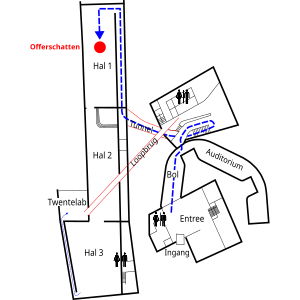
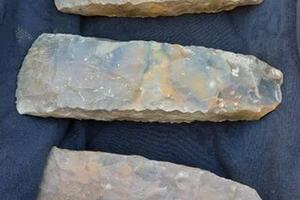
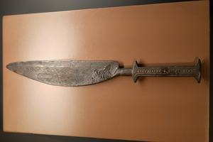
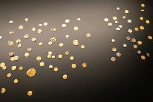
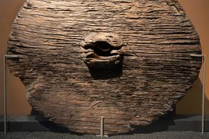
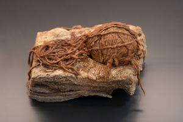

Offerschatten
In deze tentoonstelling laten we allerlei vondsten die in de veengronden in en rond Twente zijn gedaan. Waarschijnlijk zijn deze toenmalig waardevolle "offerschatten" geofferd aan de goden om deze gunstig te stemmen en de mensen voor rampen te behoeden.
Luisterpunten in deze tour
-

Route naar offerschatten -
 Plattegrond van offerschatten
Plattegrond van offerschatten -
 1. Welkom
1. Welkom -
 2. Replica van het Tempeltje Bargeroosterveld ca 1500-1250 v Chr.
2. Replica van het Tempeltje Bargeroosterveld ca 1500-1250 v Chr. -
 3. Houten onderdelen tempeltje
3. Houten onderdelen tempeltje -
 4. Vuurstenen dolk Bruinehaar-Lokbelt (bij Haaksbergen) ca. 11.000 - 3.000 v.Chr
4. Vuurstenen dolk Bruinehaar-Lokbelt (bij Haaksbergen) ca. 11.000 - 3.000 v.Chr -

5. Drie grote vuurstenen bijlen uit Collendoorn bij Hardenberg (ca 3450-2750 v.Chr.) -
6. Vier gouden halsringen van Olst (laat Romeinse tijd, ca 400 na Chr)
-
 7. Zwaard van Ommerschans (midden bronstijd, ca 1400 v.Chr.)
7. Zwaard van Ommerschans (midden bronstijd, ca 1400 v.Chr.) -

8. Bronzen offer mes van Daarlerveen/Vroomshoop (ca. 1200 - 800 v.Chr.) -

9. Muntschat Hezingen (590-700 n.Chr) -
 10. Het paar van Weerdinge
10. Het paar van Weerdinge -

11. Het houten schijfwiel van Steenwijk ca 2280-2130 v Chr -

12. Bolletje wol van Roswinkel ca 800-600 v Chr -
 13. Maalstenen uit Haaksbergen. ca 100 n Chr
13. Maalstenen uit Haaksbergen. ca 100 n Chr -
 14. Koperen Hanze schotel met gravure van Humilitas (ca. 1200 n. Chr.)
14. Koperen Hanze schotel met gravure van Humilitas (ca. 1200 n. Chr.) -
 15. Tot slot
15. Tot slot